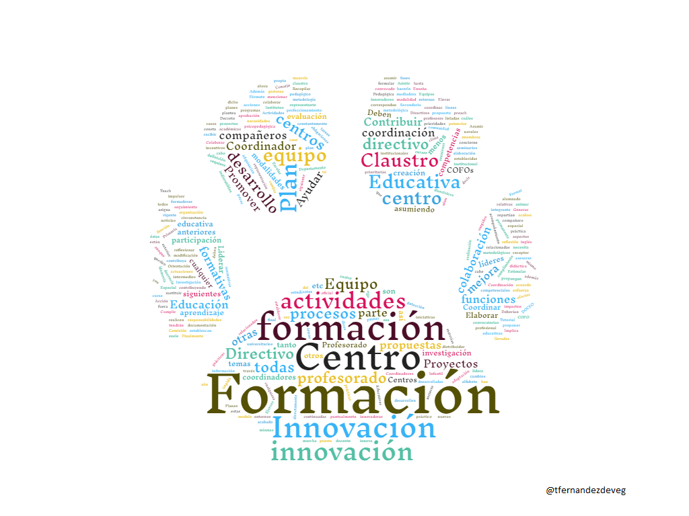
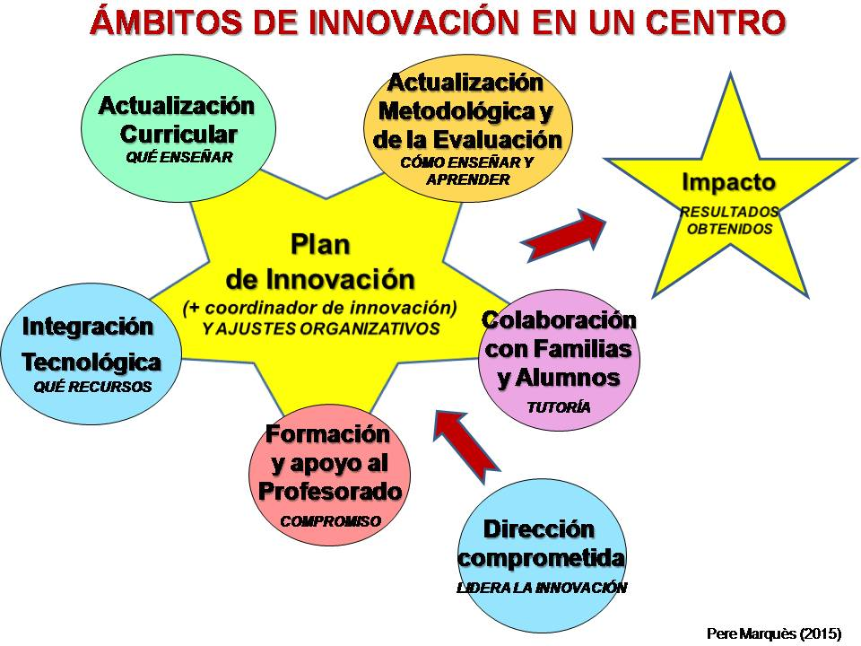

UNIDAD 2- FUNCIONES DEL COORDINADOR DE FORMACIÓN
Las funciones que el Decreto de Formación vigente asigna al Coordinador de Formación son las siguientes:
- Recoger las necesidades de formación detectadas en el centro y trasladarlas a la Red de Formación, en concreto al asesor o asesora de formación de su Centro de Profesorado de referencia.
- Colaborar con el Equipo Directivo y el Centro de Profesorado en la planificación, organización y realización de las actividades de formación en el propio centro, así como en la elaboración del Plan de Formación del centro.
- Liderar los procesos de formación del profesorado contribuyendo a la creación de un clima de colaboración y participación.
- Participar de forma activa y proactiva en la realización de los proyectos educativos en los que participe el centro educativo.
- Promover la participación del profesorado en el intercambio de experiencias, en las actividades formativas detallas en el Plan de Formación del Centro y en otras modalidades formativas, así como en la selección y elaboración de materiales didácticos que contribuyan al avance de la práctica docente, con especial mención al intercambio de información a través de las redes sociales y de la formación on line.
- Gestionar los apoyos demandados por el centro en cuanto a recursos pedagógicos y didácticos que puedan facilitar los Centros de Profesorado.
- Colaborar con el Equipo Directivo en la evaluación del Plan de Formación del Centro.
- Coordinar las prácticas académicas externas de los estudiantes universitarios que se desarrollen en el centro, así como los procesos de acompañamiento de Profesorado novel que se establezcan.
- Colaborar con el Centro de Profesorado la realización, seguimiento y evaluación de las actividades formativas que se realicen en su centro.
- Participar en las actividades formativas organizadas por el Departamento competente en materia de educación no universitaria, dirigidas específicamente a este colectivo.
- Asistir a las reuniones de coordinación a las que sea convocado por el Centro de Profesorado.
- Formar parte del Consejo de Centro de Profesorado, si fuera propuesto para ello.

Además de éstas, en los Institutos de Educación Secundaria los Departamentos de innovación y formación educativa tendrán las siguientes:
a) Recopilar las propuestas de innovación y formación de la comunidad educativa, de acuerdo con las directrices establecidas por la Comisión de Coordinación Pedagógica.
b) Elaborar el Plan de Innovación y Formación del Centro y formular propuestas al equipo directivo y al claustro, relativas a la elaboración o modificación de dicho plan.
c) Contribuir al desarrollo del Plan de Formación del Centro en coordinación con las acciones llevadas a cabo por el Departamento de Orientación y del Plan de Acción Tutorial.
d) Contribuir al desarrollo de la innovación y formación psicopedagógica y profesional del profesorado en lo que concierne a su adaptación a los cambios surgidos en la didáctica de las materias que imparten, y en especial a la metodología por competencias.
e) Promover la investigación educativa y proponer actividades de perfeccionamiento del profesorado.
f) Asumir, en su caso, docencia en aquellas actividades de formación desarrolladas en el Centro a través de las modalidades de cursos, seminarios o proyectos de formación de centros en las líneas prioritarias propuestas en el Plan de Formación del Profesorado.
g) Elevar al Equipo Directivo una Memoria sobre la innovación y la formación al final del curso para su aprobación por el Consejo Escolar.
En los Centros de Educación Infantil y Primaria y Educación Especial las de:
h) Coordinador e impulsor de la Innovación Educativa.
En las convocatorias de Planes de Formación y para todos los centros consta que:
i) Deben sustituir a los Coordinadores de Actividades en cualquier circunstancia que impida el desarrollo de las mismas.
j) Deben coordinar las actividades dentro de la modalidad de Proyectos de Formación en Centro.
Finalmente, en el cumplimiento de todas las anteriores y a efectos prácticos, aunque no normativos, los COFOs acaban asumiendo otras funciones, algunas de las cuáles, como otras anteriores, se repartían entre los miembros del Equipo Directivo hasta hace muy pocos años. Entre ellas podemos mencionar:
k) Ser el receptor y distribuidor para el Claustro de noticias relacionadas con la Formación del Profesorado (actividades de formación, información institucional, etc).
l) Cumplir una función mediadora entre el Claustro y el Equipo Directivo para temas relacionados con formación e innovación.
m) Liderar procesos de cambio y potenciar la creación de líderes intermedios. Implica en la mayoría de los casos asumir directamente la coordinación de Proyectos de Innovación o Investigación Educativas que se propongan desde los centros.
n) Ayudar al Equipo Directivo en cada una de las fases de sus planes de mejora.
o) Promover la reflexión metodológica.
p) Generar entornos nuevos e innovadores de aprendizaje para el Claustro y animar a los compañeros a establecer pautas para su propio aprendizaje permanente y continuadas mejoras competenciales.
q) Ayudar a los compañeros coordinadores de actividades en todas sus tareas y obligaciones, tanto como formadores como gestores en DOCEO. r) Ayudar, si así se requiere, a cualquier compañero del Claustro en la puesta en marcha de iniciativas innovadoras en cualquiera de sus aspectos (desarrollo, documentación oficial para programas institucionales, organización en centro, etc). s) Ejercer la representación del centro sobre temas de innovación o formación cuando se necesita puntualmente un representante del Claustro para actuaciones en el exterior. t) Ser modelo práctico de todo lo que como COFO y Coordinador de Innovación se plantea para los compañeros. “Teach as you preach”, se suele decir en inglés. Enseña tú mismo como dices a los otros que deben hacerlo. Fórmate constantemente, innova, lidera.
Una vez listadas todas estas funciones, cabe reflexionar sobre lo siguiente: ¿Deberían los COFOs, que además son ahora coordinadores de los procesos de innovación y mejora, y por lo tanto líderes metodológicos indiscutibles de los centros, ser parte integrante de los Equipos Directivos, o por lo menos recibir otros incentivos que correspondan a todas las responsabilidades, esfuerzo y trabajo que están asumiendo?
Actualmente, en Aragón los líderes de la innovación ya no son los Equipos Directivos, como vemos en esta imagen de Pere Marqués del 2015, sino los COFOs, pues además de la Formación se les ha transferido esa responsabilidad.


EL CENTRO EDUCATIVO Y LA FORMACIÓN DEL PROFESORADO por varios autores bajo licencia Creative Commons Reconocimiento-NoComercial-CompartirIgual 4.0 Internacional License.